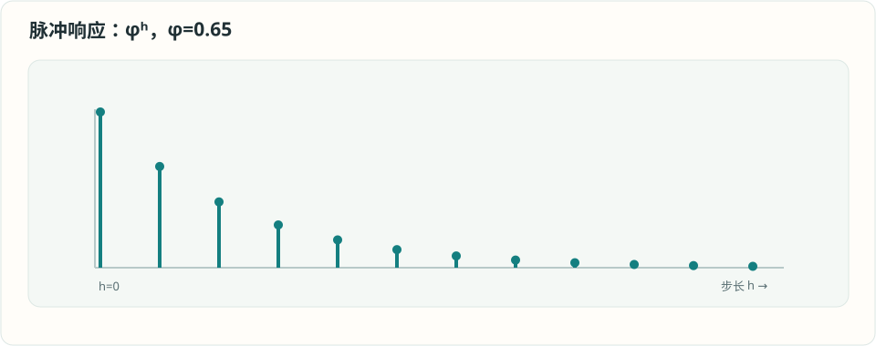
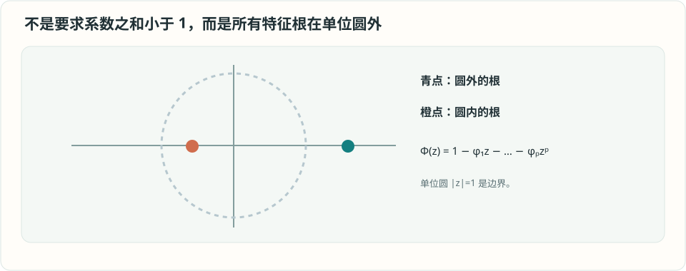

CHAPTER 08 / 28 · STATISTICAL MODELLING
自回归模型 AR：状态、平稳根与预测
AR(p) 通过过去 p 期观测预测未来。理解条件均值、Yule–Walker、特征根和冲击响应，并用 AutoReg 验证理论。
设想某个传感器读数持续偏高。下一个时点通常也会偏高，但偏差可能慢慢衰减。如果偏差每期大约保留 65%，那么可用一个极简的自回归模型表达这种惯性。这不是断言“每个现实序列都只有一个滞后”，而是把可预测的线性记忆压缩成可估计的系数。
本章将“观测值反馈”与“创新冲击”分开：模型基于已经看到的过去计算条件均值；下一期实际值还会出现当下的新冲击，它在预测时尚不可知。
01 · AR(p)：用过去 p 期预测当前水平
先用均值为 μ 的平稳序列描述。对去均值变量 zₜ = yₜ−μ，AR(p) 是过去 p 期偏差的线性组合加一个当前创新。创新 εₜ 具有零均值、稳定方差和时间上不相关的基本假设；是否独立或正态，应随具体推断方法单独说明。
AR 不是纯粹的“把上一期数值复制一次”：即使是 AR(1)，其长期均值也可能不是零，预测会围绕 μ 逐渐变化。模型可以有多个滞后系数，也能与外生变量组合成 ARX。
02 · AR(1)：冲击逐步衰减，还是永久保留
对 zₜ=φzₜ₋₁+εₜ，把前一项反复代入，可得到 zₜ=εₜ+φεₜ₋₁+φ²εₜ₋₂+…（在因果平稳条件下）。所以一次单位冲击发生后，对未来第 h 期的响应恰为 φʰ。

若 φ=−0.65，冲击的正负影响交替，但绝对值仍衰减。若 φ=1 则是随机游走式边界；若 |φ|>1，从固定初始状态向前递推会产生爆炸式响应，不能解释成通常稳定的因果 AR 过程。
03 · 对 AR(p)，不能只看单个系数是否小于 1
AR(1) 的平稳条件可写成 |φ|<1。对更高阶 AR(p)，必须考察滞后多项式的全部根，不能只用“每个 φⱼ 的绝对值都小于 1”或“系数和小于 1”代替。

例如 AR(2) 的稳定区域是一个联立系数约束空间。它可能包含某些单个系数绝对值大于 1 的组合，也可能排除全部系数各自小于 1、但组合不稳定的情形。实际实现应检查估计根，而非只凭目测系数。
04 · Yule–Walker：从相关结构反推参数
在平稳 AR(p) 且创新与过去不相关时，将模型两边乘以滞后 k 的中心化观测并取期望，可得到 γ(k)=Σφⱼγ(k−j)。取 k=1,…,p，即形成线性方程组。
严格说，矩阵与向量上方此处使用的是用于记号区分的排版，不表示额外数学运算。对 AR(1)，φ=ρ(1)，所以理论一阶自相关可以直接读取系数。样本 Yule–Walker 解依赖样本自协方差估计与偏差修正方式。
| 估计方式 | 核心思想 | 常见边界 |
|---|---|---|
| 条件 OLS / AutoReg | 前 p 期用于构造回归列 | 条件在初始滞后观测上，样本短时波动较大 |
| Yule–Walker | 利用样本自相关与 Toeplitz 结构解方程 | 假设二阶平稳，受样本 ACF 偏差影响 |
| 状态空间 / 极大似然 | 基于完整概率模型/初始化处理进行估计 | 需要适当分布、优化与收敛检查 |
05 · h 步预测为什么最终回到均值
对已经估计好的 AR(1)，下一步预测用当前偏差，未来两步继续递推。由于未来新冲击的条件期望通常设为零，预测满足 ŷ(T+h|T)−μ = φʰ(y_T−μ)。这说明长期预测逐渐趋向 μ，但预测不确定性会随步长扩大到过程的长期方差。
如果 φ≈1，预测偏差消失得很慢；如果 φ≈0，下一期几乎就回到均值。模型的长期预测收敛并不意味着真实数据一定存在不变的长期均值：变点、时间变化参数会破坏该假设。
06 · 改变 φ，探索冲击的长期影响
交互图使用解析值 ψₕ=φʰ 绘出 12 期脉冲响应。正的 φ 产生同号衰减；负的 φ 产生交替衰减。参数限定在严格平稳范围内，避免把爆炸过程误认为常规 AR 模型。
本图表示已知理论参数下的解析结果，不是从真实数据估计出来的。
07 · Python：模拟、Yule–Walker、AutoReg 与残差诊断
下面只用训练数据拟合 AR(2)，固定模拟种子，列出 Yule–Walker 系数与 AutoReg 系数，再用留出的最后 24 期构造不偷看未来的多步预测。
import numpy as np
from statsmodels.tsa.ar_model import AutoReg
from statsmodels.regression.linear_model import yule_walker
from statsmodels.stats.diagnostic import acorr_ljungbox
rng = np.random.default_rng(2026)
eps = rng.normal(size=360)
y = np.zeros(360)
for t in range(2, len(y)):
y[t] = .55*y[t-1] - .18*y[t-2] + eps[t]
train, test = y[:-24], y[-24:]
fit = AutoReg(train, lags=2, trend="n").fit()
phi_yw, sigma_yw = yule_walker(train, order=2, method="mle")
forecast = fit.predict(start=len(train), end=len(y)-1, dynamic=False)
print("conditional OLS:", fit.params)
print("Yule-Walker:", phi_yw)
print("MAE:", np.mean(np.abs(forecast-test)))
print(acorr_ljungbox(fit.resid, lags=[12], model_df=2))
assert len(forecast) == len(test) == 24注意：预测区间完全位于训练序列之后，AutoReg.predict 会递推使用此前预测值，而不是读取隐藏测试值。原始样本前两项从零初始化，所以代码是教学模拟而非精确的平稳初始化样本。不要把不同估计器一次样本的数值差异视为证明谁更优。
08 · AR 模型的失效边界
- 结构漂移：如果稳定均值或系数在样本外改变，理论长期均值并不再可靠。
- 过多滞后：高阶 AR 可能追逐噪声，增加方差与外推不稳定性。
- 残差异方差：仅检查均值 ACF 不足以判断条件方差是否还存在结构。
- 参数解释：“昨天影响今天”的回归系数并不自动构成因果解释。
- 缺失观测：不规则间隔不能未经处理就当作等时距 AR 模型。
进一步阅读与技术核对
引用指向公式、模型定义与实现接口的官方资料。所有图和模拟结果均为教学示意，并非经验表现的证明。